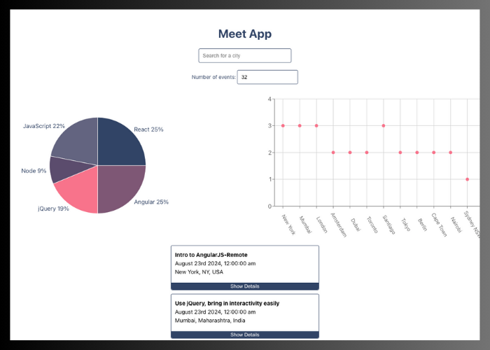
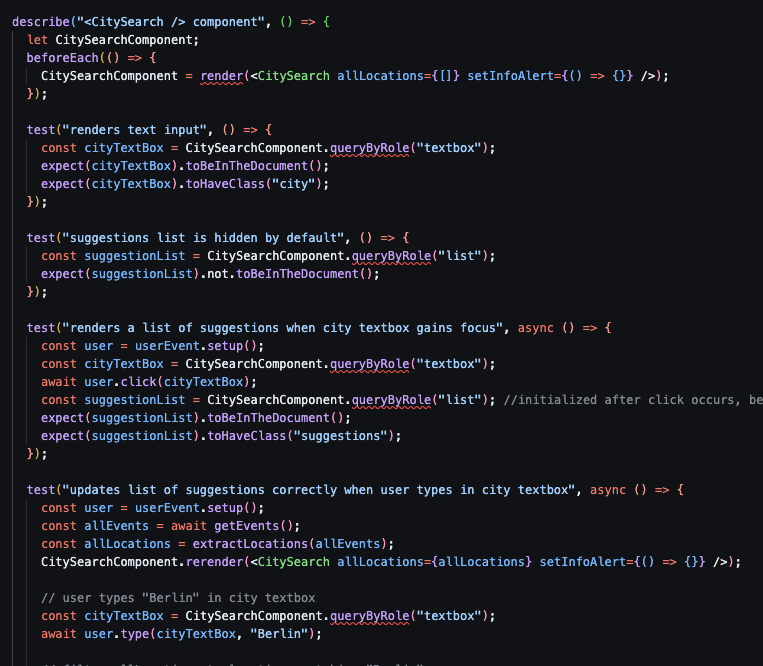
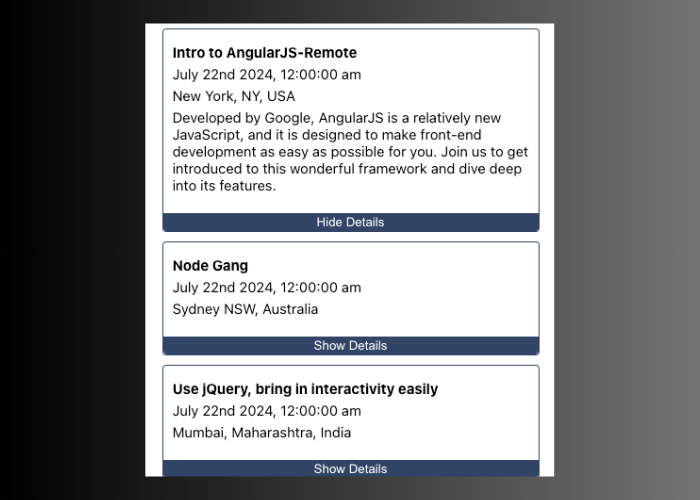

Meet App
Github link App linkThe Goal:
A React application giving users information about events in certain cities. Allows users to search for cities and displays visual data about what events are available and specifics about each event.
The Purpose:
Career Foundry, Full-Stack Immersion, Achievement 4
To build a test driven development app that relies on AWS-Lambda cloud functions and data visualization to inform the user about different events in a chosen city.
The Tools:
- JavaScript
- React
- AWS-Lambda
- OAuth2
The Process:
I built this application using a Test Driven Development principles. So it started with slowly creating my three main functions ( getAuthURL(), getAccessToken(), and getCalendarEvents() ). Once these functions were built my next step was to host them on a cloud server, I used AWS and then had to organize my auth-server to hold my base functions and then push them to the server as needed.
This was my biggest challenge in this application, somewhere in the process of sending my functions across to the AWS server I must of made a mistake and something threw off the server. Finding this error was the new challenge, I could not find it. I ended up reaching out to a developer friend who helped me through the AWS logs and we reset the server and re-sent all of the functions.
After that it felt like smooth sailing, building again with React felt great and I was feeling even more at home with the framework. I was proud of a lot of my design choices, especially the “show details” button on each event card.
The Outcome:
I learned the value of reaching out and working with other developers to help find solutions and through that process learned more about using AWS. I would be curious to build more serverless functions for another application and see if I could build something a little more complicated.